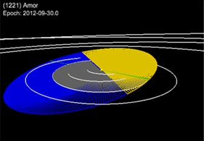

Latest Near-Earth Object (NEA)

VIEW LARGER
- Object
- (1221) Amor
- Epoch
- 2012-09-30.0
- Arg. of Period
- 26.65612
- Ascend. Node
- 171.36642
- Inclination
- 11.87858
- Eccentricity
- 0.4355315
- Semi-maj. Axis
- 1.9190210